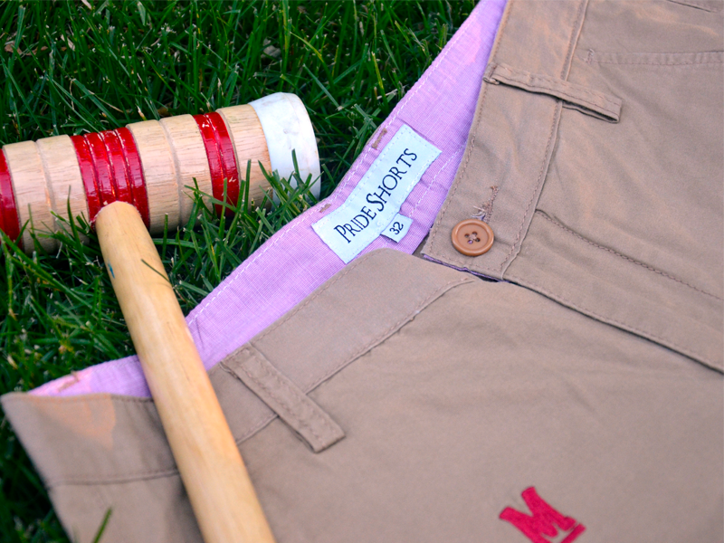
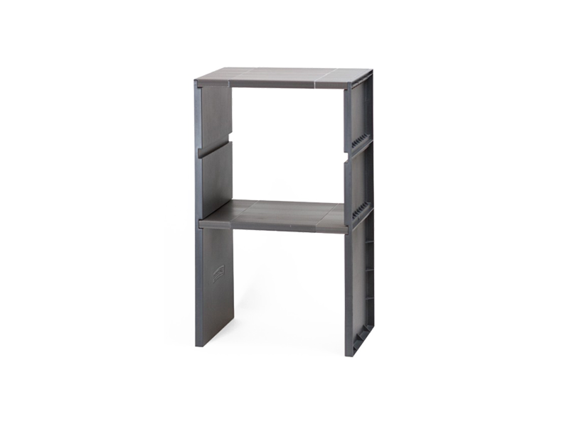

Plenti is American Express's internal startup. It is a fast-growing loyalty coalition with 40+ million active members and partners like Macy's, Rite Aid, AT&T, and Exxon. Plenti is changing the way merchants think about customer loyalty.
As an analyst, I answer questions about how the business is doing and where it is going.
I also lead design thinking education across American Express.
Design thinking is a human-centered innovation process. I brought design thinking methods and mindsets to over 250 American Express employees. I also provide guidance to help teams prepare and lead design sprints. Lately, I have been interested in best practices to bring about innovation and creativity in teams.
If you would like a design thinking session for your team please contact me.
Previously, I worked for the Academy for Innovation and Entrepreneurship
The Academy's mission is to infuse the University of Maryland's culture with innovation. We do this by empowering students to solve real-world problems with an entrepreneurial mindset. You can read about the progress in the annual report.
I facilitated and designed experiential learning experiences that brought design thinking and lean startup to core curriculum classes. I also coached teams as they developed products, services, and experiences.
Raised seed money in business competitions, sourced global manufacturer, delivered products to hundreds of customers.

2// The Lockershelf Company
Highest quality lockershelf product line on the market.
Co-developer and co-patent holder of innovative locker shelf design.

Additionally...
I interned for Surprise Ride which was my first experience in designing products for customers who were unlike myself– children ages 6-11 and mothers.
I earned a Six Sigma Green Belt certification for consulting with NASA at the Goddard Space Flight Center. I worked on processes optimization and variability reduction in the Thin Films Lab.
I explore new technologies. Here are a few examples...
I used the Amazon Dash Button to share water
Inspired by a virtual reality experience I wondered "how might I share water across continents"? I reconfigured an Amazon Dash button to donate water instead of ordering Mentos.
What excites me most about the Internet of Things is how it enables emotional experiences across distances. I wondered "how might I send a feeling across the internet"? I built an internet of things flower that blooms and offers a message to the receiver.
I used a microprocessor to sync lighting with the sun's cycle
How might I feel more connected to the natural world? I built a seven bulb lighting system that synced with the sun's solar cycle to cast light in my room as if the sun was moving across my ceiling.
I graduated from the Robert H. Smith School of Business at the University of Maryland in 2016. I was awarded two of the highest senior awards, the H.C. Byrd Citizenship Award and membership to the Maryland Medallion Society.
My hope is that you have a better sense of who I am through what I have created. Curiosity drives my experiences. Areas that I enjoy exploring are:
:: empathizing with end users
:: finding and defining new business opportunities
:: creating new products, services, and experiences
:: leading people and organizations to be more innovative